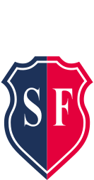
2026« L'expertise pour reconstruire, l'unité pour grandir »
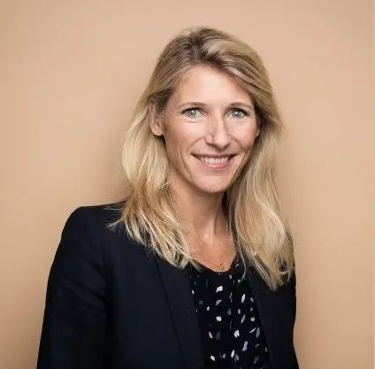
Autour de Marie BARSACQ
Le Stade Français c'est VOTRE CLUB.
Le rendez-vous où vous vivez des moments uniques en famille, entre amis, où vos enfants sont éduqués au travers des valeurs du sport, où vous vous confrontez au dépassement de soi ou simplement éprouvez le plaisir de vous retrouver autour de la pratique sportive.
Le Stade Français a 143 ans, il est à un moment clef de son histoire.
Il doit se réinventer pour prendre la roue du lendemain des Jeux de Paris 2024. Les Jeux ont fait la démonstration du rôle sociétal du sport et de sa place dans la vie des Français : pour être en bonne santé tout au long de la vie, pour mieux vivre ensemble. Aujourd'hui, le Stade dispose d'une formidable opportunité de se saisir de ces enjeux pour construire une vision moderne qui saura séduire aussi bien des acteurs privés que publics pour accompagner son projet.
RENOVER ET GRANDIR
Nous sommes une équipe soudée et compétente, paritaire et pluridisciplinaire, prête à intégrer le Comité Directeur.
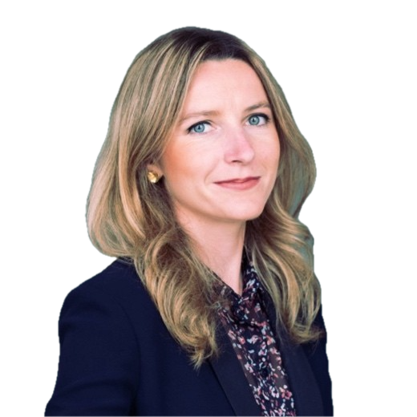
Chief of staff du CEO du Groupe Barrière.
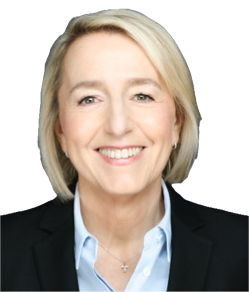
Journaliste, ancienne directrice de l'information RTL, aujourd'hui VP de Publicis Consultants.
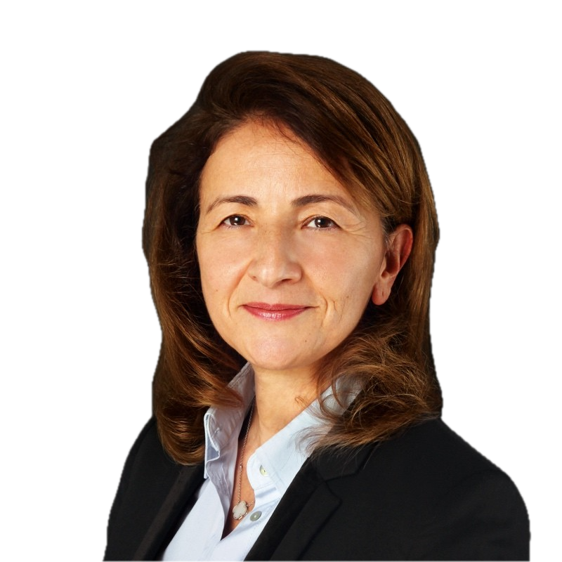
Directrice du digital et de l'information et membre du comité exécutif de Technip Energies.
Championne de France longue distance à plusieurs reprises.
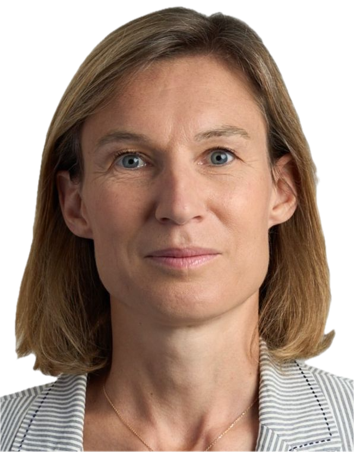
Directrice générale adjointe d’Ile-de-France Mobilités.
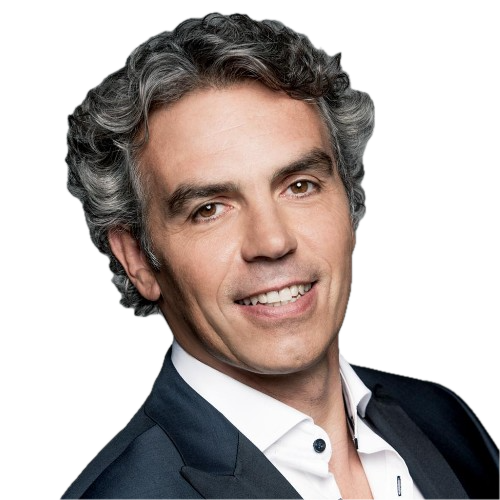
Journaliste sportif (Sud Radio). Ancien joueur de rugby (Champion de France 1991 & 1996), élu au Comité directeur (2020-26).
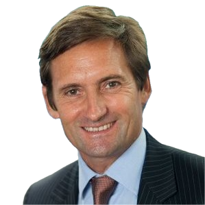
Directeur financier de la société EVARISTE, élu au Comité directeur (2020-26).
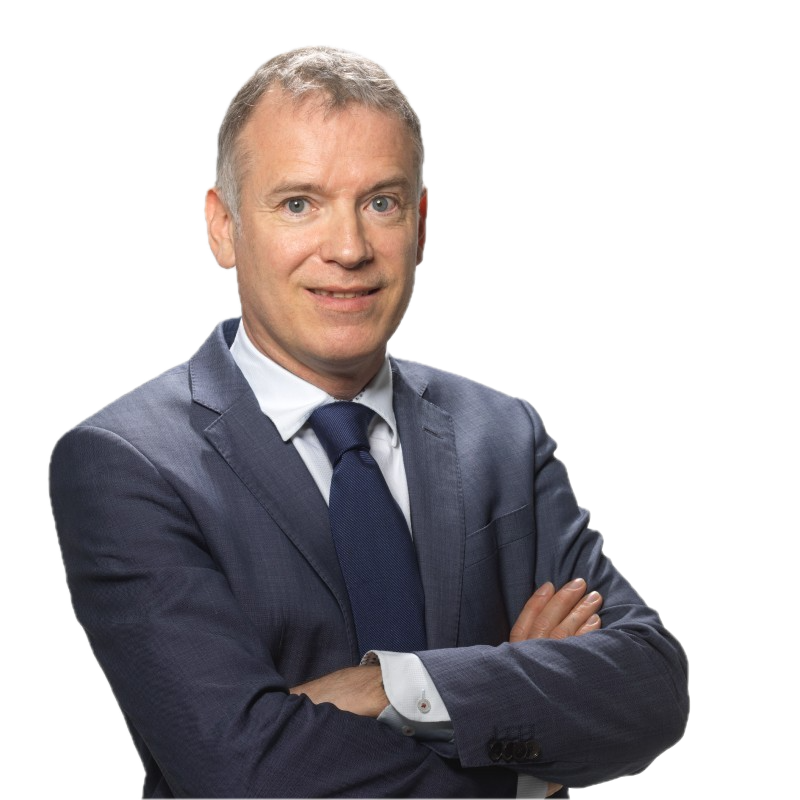
Directeur général de la Ligue Ile-de-France Athlétisme.
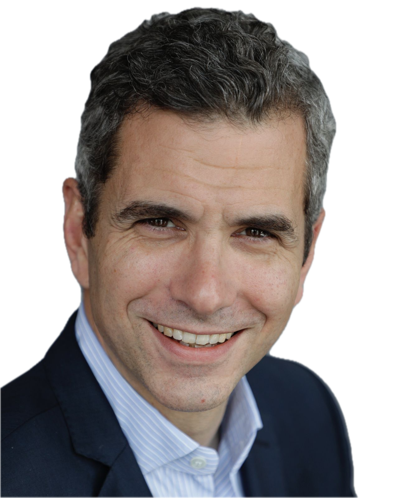
Entrepreneur et Investisseur.
Ancien joueur de rugby (Champion de France 1998), consultant spécialiste de la transformation des équipements sportifs.
Cette liste est soutenue par les membres du Comité Directeur, encore en poste :
Nous vous presenterons, la reconstruction par le haut.
14 mars à 10h30
18 mars à 14h00
21 mars à 10h30
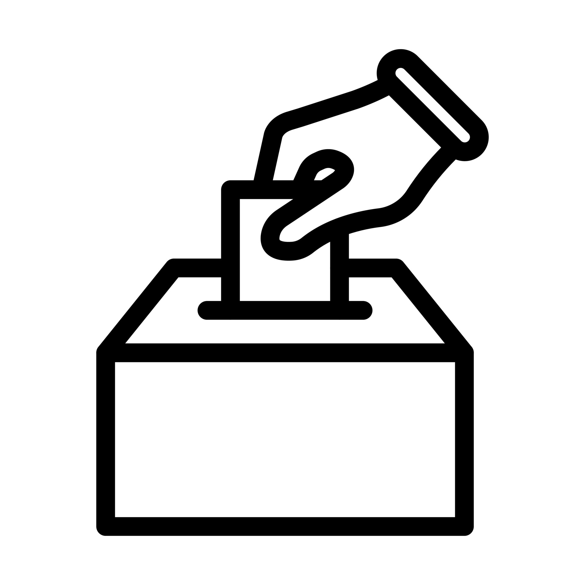
Le jeudi
L'avenir du Stade est entre vos mains
Votez pour la liste
« 2026 : Rénovons le Stade Français »
Il sera procédé à l'élection de dix membres du Comité directeur pour une durée de 6 ans. Le vote se fera exclusivement à distance et sera ouvert le 26 mars 2026.
Votre voix est essentielle pour l'avenir du Stade Français.
Nous vous invitons à partager vos idées, participer à la réflexion collective et contribuer concrètement à la construction du Stade Français de demain.